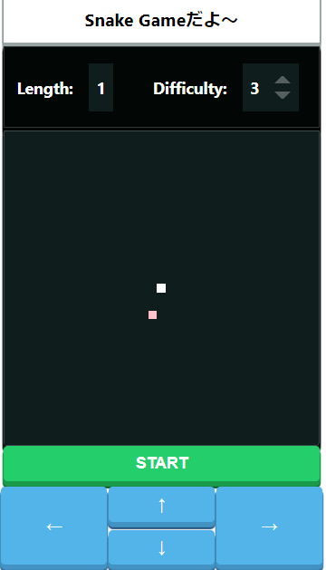
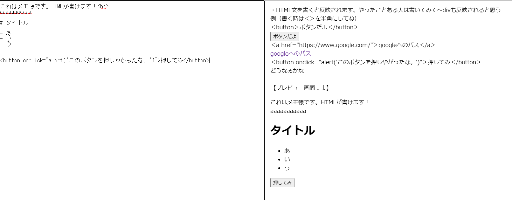
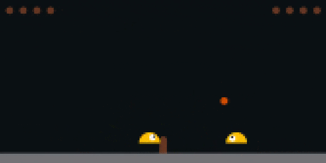

かねぼんのワールドへようこそ～随時更新していきます！
作ったものとか(画像をタップすると遊べます！)
スネークゲーム

作成途中
PC用の需要があるかわからないメモ帳アプリ（記憶保存）

気になるやつ
Python言語で機械学習したCPU同士のバトル.（他者製作）

使用させていただいているBGM：天空の反逆者 作曲者：MoGura様
MoGura様のプラットフォームhttps://www.youtube.com/channel/UCyasXLHMATuiSFSVw8REdVw
おすすめ！！
宮代町の無印良品店内にて、毎週月曜日に展開されているpatissier perchoir店
*東武動物公園駅より徒歩1分*
ホームページ: patissier perchoir(パティスリーペルショワール)
公式ライン
※紹介許可は取りました。